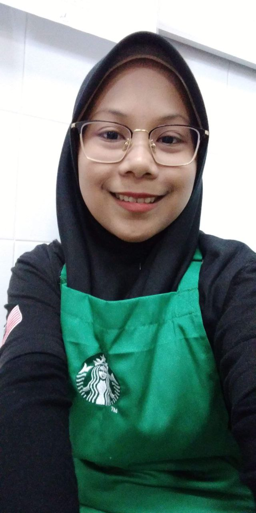
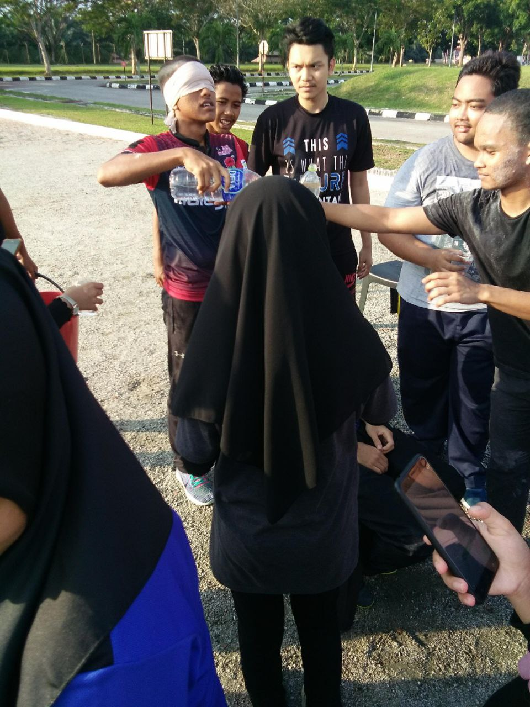
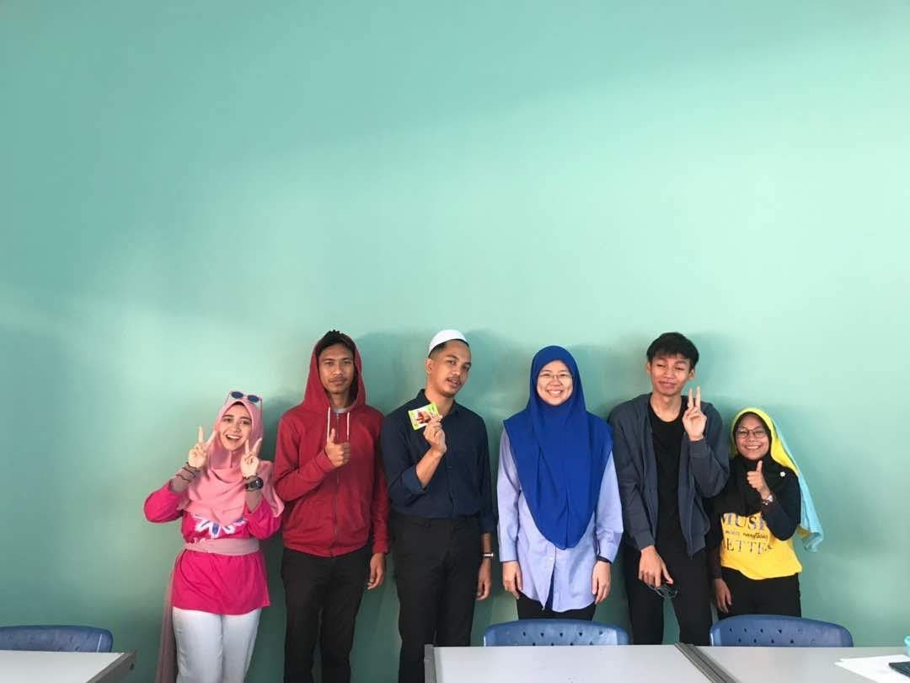
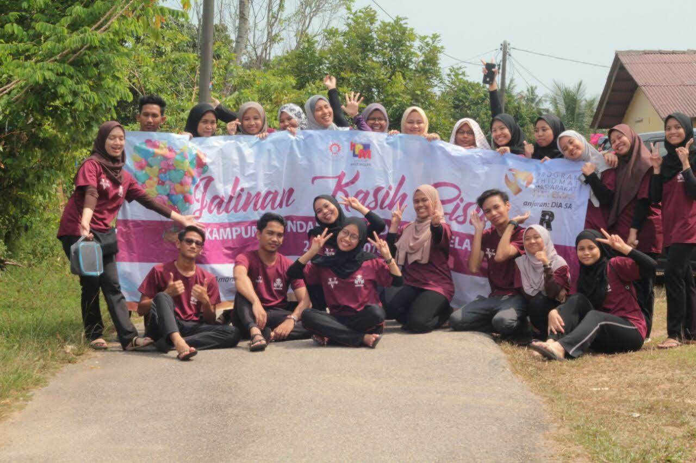
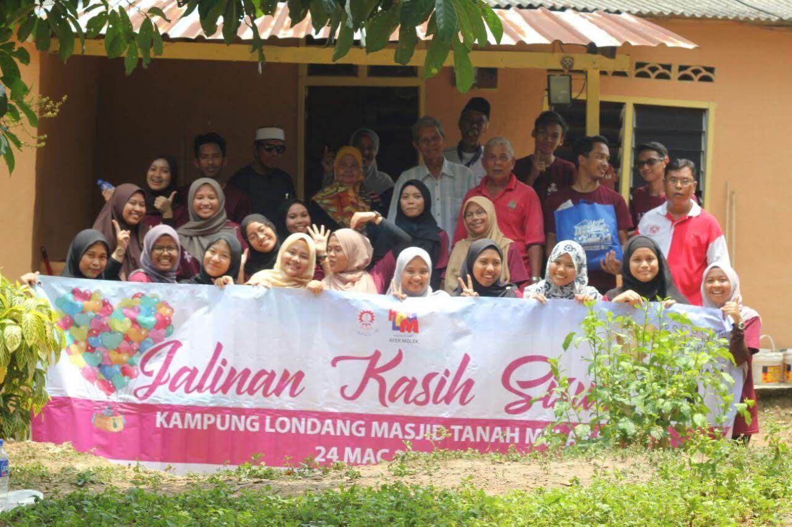
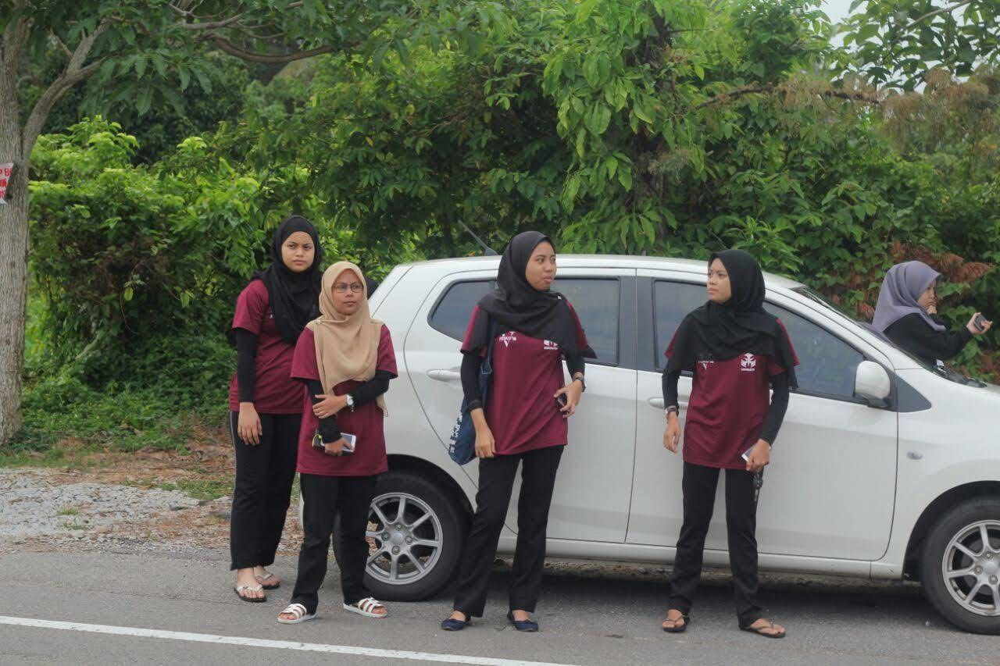
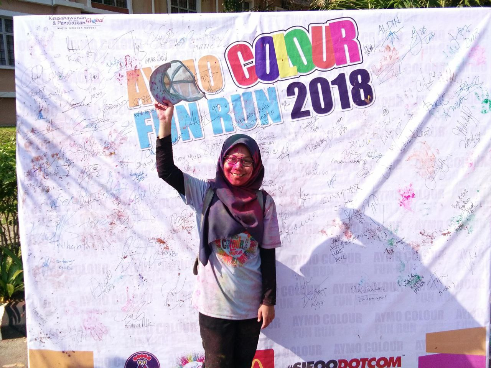
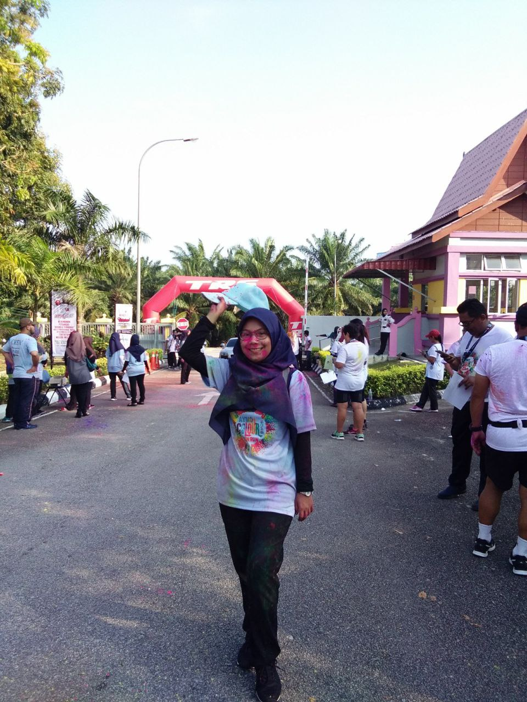
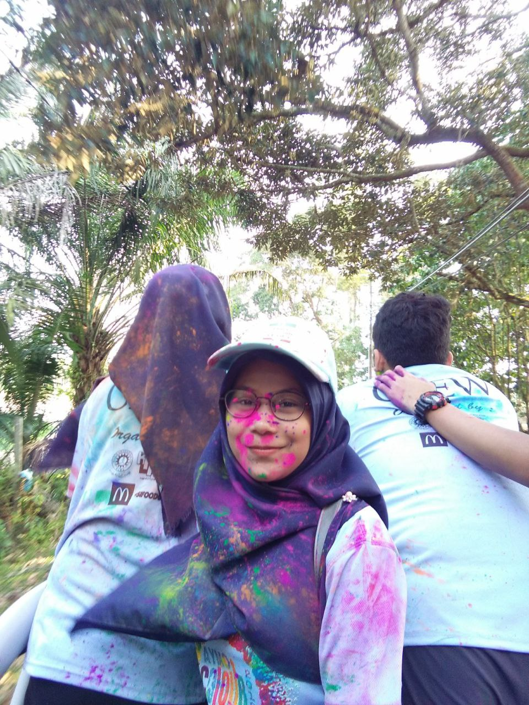

I have two working experience before I continue my degree journey. After I finish my diploma in Accounting, I work as a part time at a book store in Melaka which is as a casheir at popular book store in Mahkota Parade. I love this job because it is first time for me work and i also like the working enviroment because most of the staff are Chinese and the manager also Chinese. Even we are from different religion, but the staff like a family and this is my first time to have other religion freinds.
After 2 month gains experience as a casheir, then I started my new work as barista of Starbuck at Dataran Pahlawan. For me, this job are quiet difficult to compare with the first job because i need to remember all the step making Starbucks drink. Unluckily I never bought any Starbuck drink and do not know how to order it before this. So at first I need to remember drink name and type then I starting learnt to make Starbuck drinks. I love enjoying this job because from this job I learnt how to handle many types of people from another country such as from Chinese, Korea and other country.
During my diploma journey, I have an experience in handleling the Accounting Day. For me, that time i having fun enjoying the day with my bacthmate and lectures because not only students involve with the game but also lectures. We need to arrange some games for lecture and having fun with them.
  I also have experience in arranging the community service as a part of my task during semester 6.
 My homeroom get task to manage colour fun run that include all student of KPM Ayer Molek and people outside. From this event I learnt how to get some sponsor, how to deal with other people and how to manage the big event.
  